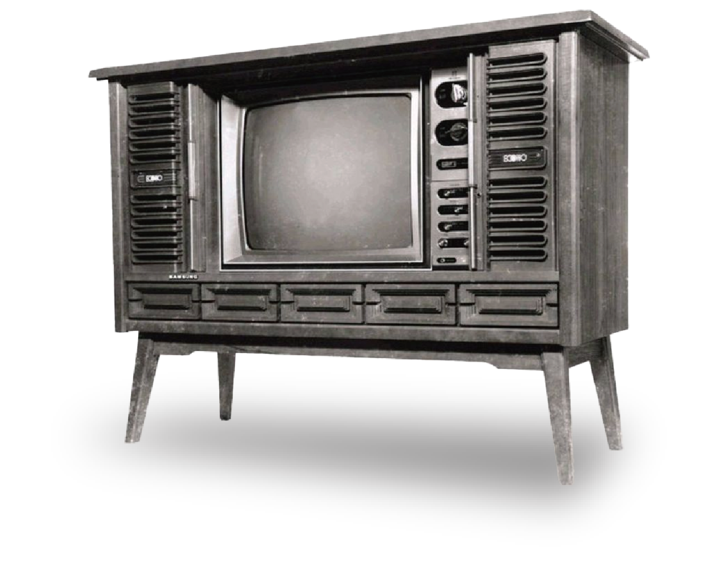

1969
해외 수출 확대를 위한 최초의 영문 표기
삼성이 제품군에 사명을 영문으로 표기하기 시작한 것은 1969년 로고부터이다.
새로운 디자인팀은 해외 시장 소비자들이 직관적으로 이해하기 어렵고 생필품 산업 이미지에 갇혀 있던 밀줄기, 가로선 등의 구체적인 농업적 상징물들을 과감하게 삭제했다.
대신에 원 안에 세 개의 붉고 날카로운 별 심볼을 극도로 추상화하여 배치하고 그 옆에 한글 '삼성' 및 영문 'SAMSUNG'을 명료하게 병기하는 세련된 흑백 및 컬러 복합 로고 체계를 수립했다. 특히 1960년대 후반 가전제품에 부착된 로고 중 일부는 한가운데에 전자(Electronics)의 첫 글자인 알파벳 대문자 'E'가 결합한 독특한 과도기적 양상을 보였다

경영 전략 및 조직 변화
가전제품 대량 생산 전략에 드라이브를 걸며 세계 최고의 흑백 TV 제조기업으로 급성장했고, 이는 훗날 반도체 산업의 거대 선두주자로 도약하는 물적·기술적 도약대가 되었다. 조직 측면에서는 단순한 유통 및 경공업 위주에서 고도의 기계 설비 라인을 갖춘 제조업 중심의 공장 단위 조직으로 재편되며 대량 생산 체제를 공고히 했다.
삼성전자가 생산한 최초의 전자제품은 1970년에 출시된 12형 흑백 텔레비전(진공관식 TV)입니다. 삼성전자가 1969년에 설립된 이후, 이듬해인 1970년부터 본격적으로 가전제품 생산을 시작하면서 내놓은 첫 제품입니다.